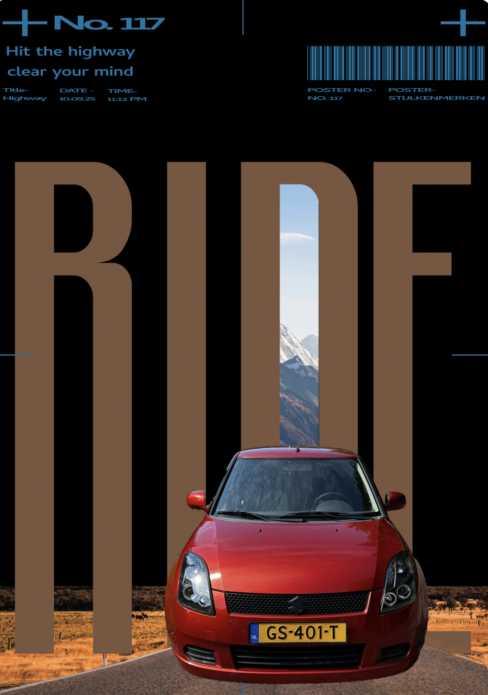
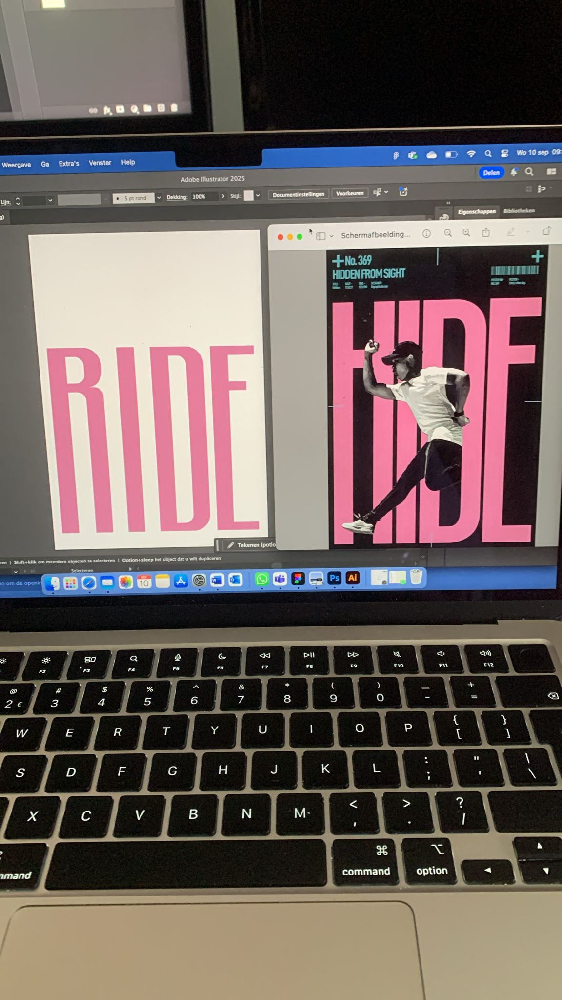
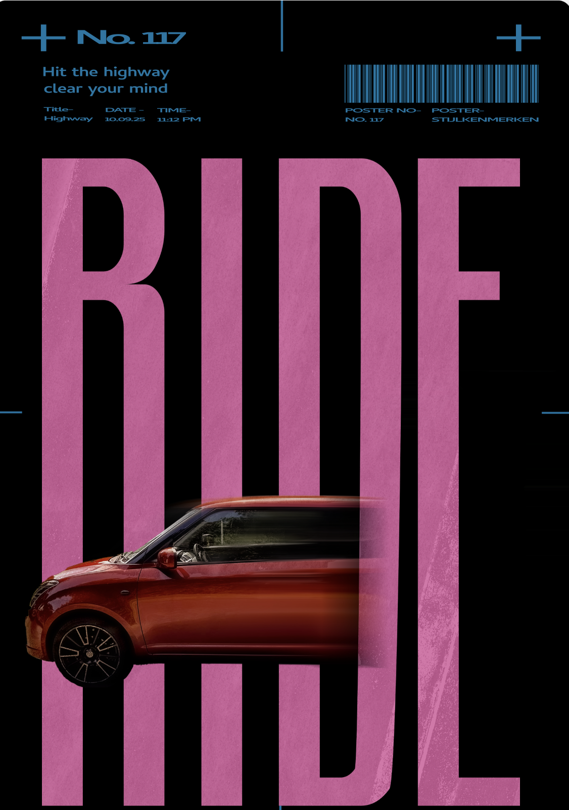
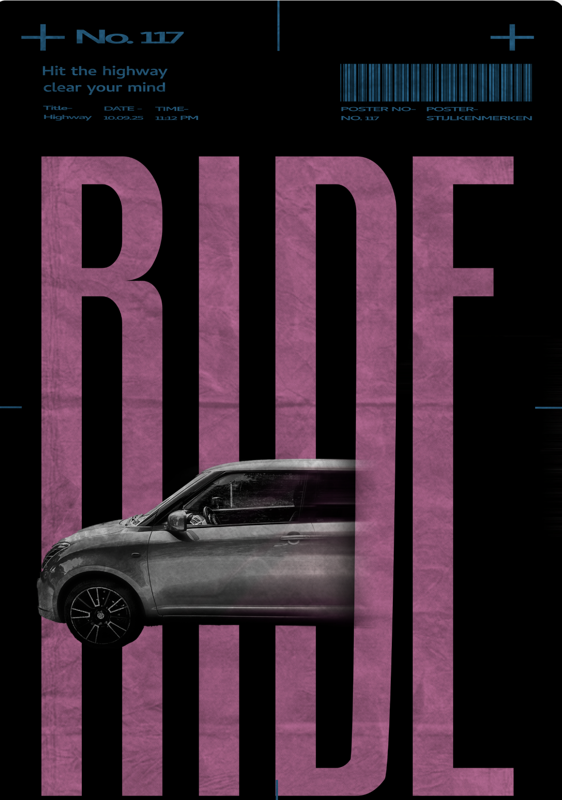

Grafisch proces
Rondom school heb ik me beziggehouden met het ontwerpen van autoposters in de stijl van een andere grafisch vormgever, zie post. Omdat ik dit met veel plezier heb ontworpen, ben ik verdergegaan met het maken van autoposters.
De volgende procesafbeeldingen laten het proces zien van de eerste poster die ik heb gemaakt. Deze sloot aan op school en vormde het startpunt voor het maken van mijn autoposters.



